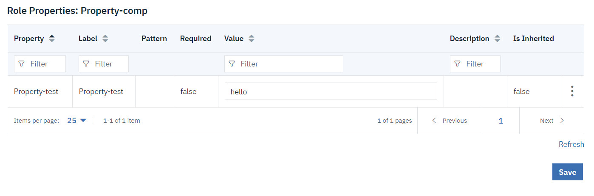

This article was originaly published in 2021.09.02
7.1.2.3
This release replaces the Urbancode Deploy versions 7.1.2.1, and 7.1.2.2. It includes all updates made in the versions 7.1.2.1 and 7.1.2.2. Versions 7.1.2.1 and 7.1.2.2 have been removed and are not available to download. If you have installed these versions, install this fix pack to prevent potential problems.
The following updates and enhancements are included.
7.1.2.3
IBM UrbanCode Deploy version 7.1.2.3 is a maintenance release and includes bug and security related fixes.
7.1.2.2
IBM UrbanCode Deploy version 7.1.2.2 is a maintenance release and includes security related fixes.
7.1.2.1
This release of IBM UrbanCode Deploy is a maintenance release and includes various bug fixes and enhancements.
Key Features and Enhancements
- Enhanced Resource Role Property table/dt>
- The Resource Role Property table on the Basic Settings page has been enhanced to include all property fields and values.